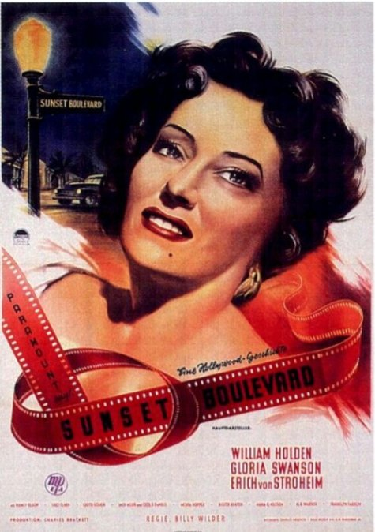
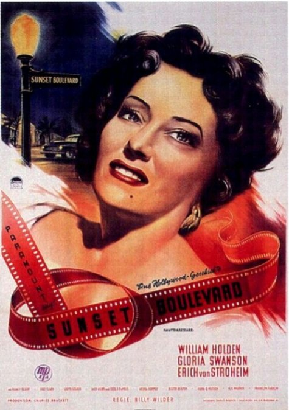

he phrase film noir was first coined in 1946 by a group of French critics to describe the emerging movement of mainly black and white Hollywood films with dark, pessimistic themes and signature motifs such as alienated antiheroes, rain slicked streets, dark shadows and seductive femme fatales. Neo-noir is a revival of film noir, a genre that had originally flourished during the post-World War II era in the United States—roughly from 1940 to 1960.
 
